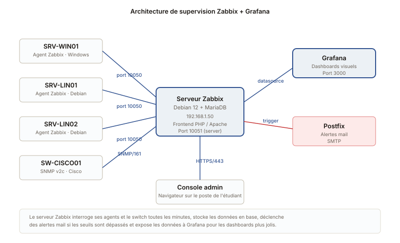

Supervision Zabbix avec dashboards Grafana
Installation d'une plateforme de supervision pour un parc Linux/Windows avec alertes mail et tableaux de bord Grafana.
L'architecture de supervision

Le contexte
Un parc fictif de cinq machines (deux Windows Server, deux Debian, un switch Cisco) et l'objectif de tout superviser depuis une console unique. Sans supervision on s'aperçoit qu'un service est tombé quand un utilisateur appelle. Avec supervision on le voit avant l'utilisateur, voire avant que ça tombe vraiment.
Choix de Zabbix
J'ai comparé Zabbix avec Centreon et Nagios. Zabbix a gagné parce que :
- Interface web complète et moderne, sans plugins payants
- Installation simple sur Debian via dépôts officiels
- Agent disponible nativement pour Windows, Linux, BSD
- Communauté francophone active
- Une formation Zabbix figure souvent dans les compétences demandées en alternance
La mise en place
Le serveur Zabbix
Installation sur Debian 12 avec MariaDB, frontend en PHP/Apache. Configuration de Postfix pour l'envoi des alertes par mail vers mon adresse perso (en attendant un vrai serveur SMTP).
Les agents
Sur chaque machine cliente, installation de l'agent Zabbix (paquet pour Debian, MSI pour Windows). Configuration du fichier zabbix_agentd.conf avec l'IP du serveur et un identifiant unique. L'enregistrement passe ensuite côté serveur en autoregistration, pour pas avoir à déclarer chaque machine à la main.
SNMP sur le switch Cisco
Pour les équipements réseau, pas d'agent à installer, on utilise SNMP. J'ai activé SNMP v2c sur le switch (community read-only), puis ajouté l'équipement dans Zabbix avec les templates Cisco. Surveillance automatique des interfaces, du CPU, de la RAM.
Les alertes
Trois niveaux configurés dans Zabbix : information, warning, high. Les warnings et plus sévères déclenchent un mail. Pour éviter les faux positifs au démarrage, j'ai mis des durées d'attente (un warning ne se déclenche que si l'état dure plus d'une minute).
Exemples d'alertes mises en place :
- Service Apache, MariaDB, ou SSH down (high)
- Espace disque {'<'} 15% libre (warning)
- RAM {'>'} 90% pendant plus de 5 minutes (warning)
- Charge CPU {'>'} 95% pendant plus de 5 minutes (warning)
- Temps de réponse ICMP {'>'} 200 ms (info)
Grafana au-dessus
Zabbix a ses propres dashboards mais ils sont assez austères. J'ai ajouté Grafana avec le plugin Zabbix DataSource pour faire des tableaux de bord plus parlants. Un dashboard "vue globale" qui affiche en temps réel l'état des cinq machines, et un dashboard "tendance" pour les graphes sur 24h / 7 jours / 30 jours.
Ce que j'ai appris
La supervision c'est pas juste mettre des agents partout, c'est définir ce qui est normal avant. J'ai mis quinze jours à régler les seuils correctement parce qu'au début mes alertes se déclenchaient toutes les nuits pendant les sauvegardes. Une fois que j'ai exclu cette plage horaire, c'est devenu utilisable.
Et ne jamais alerter sur du bruit : si chaque alerte est importante, on les lit. Si une sur dix l'est, on les ignore toutes.